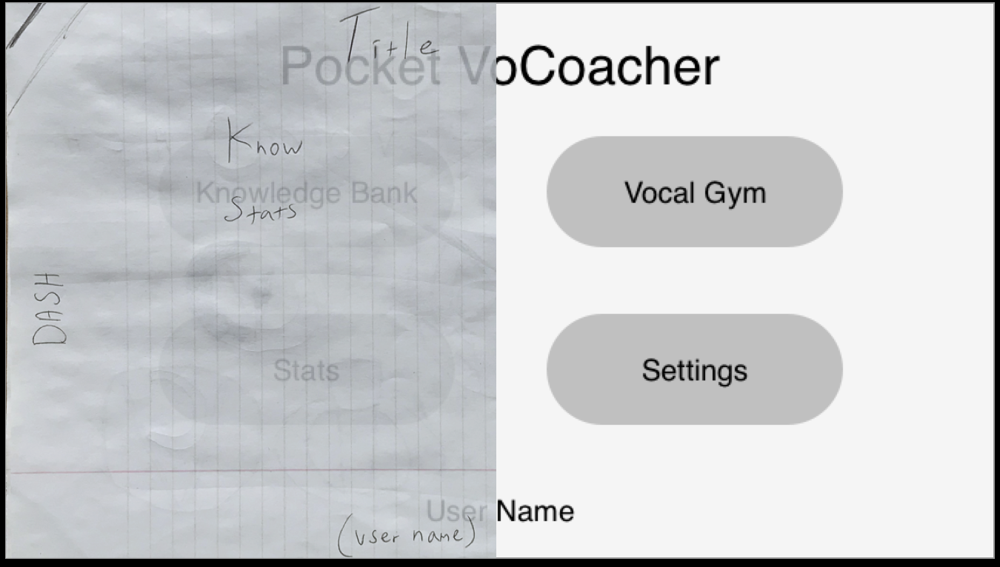
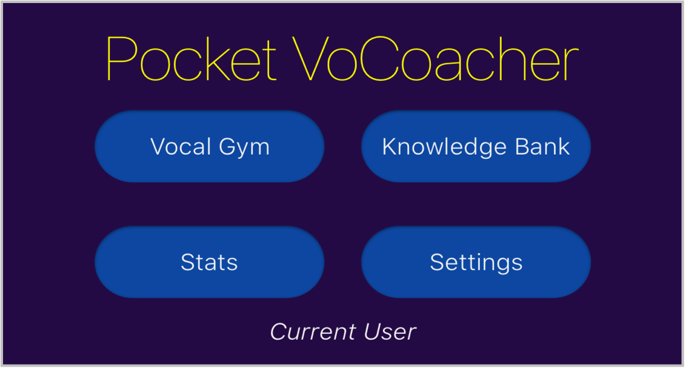
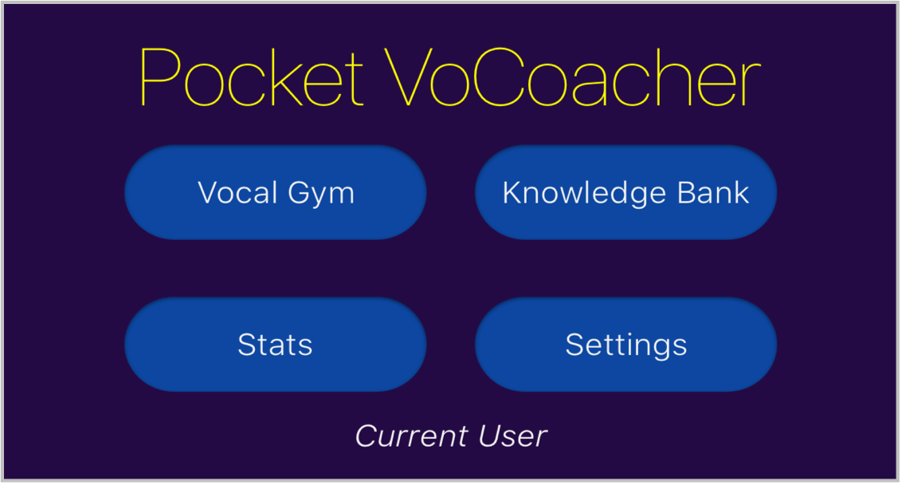
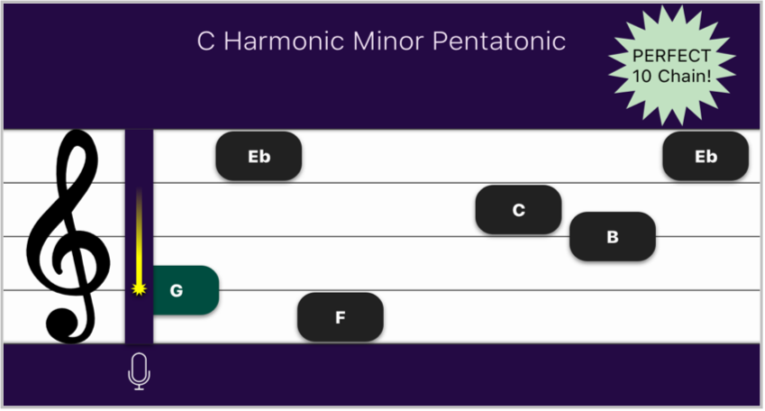
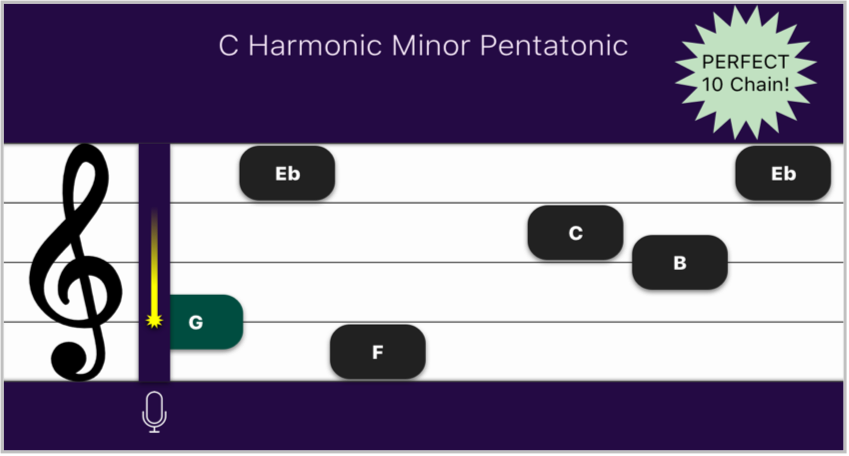

The Pocket VoCoacher was my second project for Bloc.io. I had a better idea about the role of different deliverables & was able to layer what I was working on while waiting for testing results. It took about 3 months to go from the discovery phase to a full MVP prototype. I assumed the roles of Researcher, Strategist, Information Architect, & Visual Designer. I used Sketch for lo-fi wires & the rest of visual design, Draw.io for flows, & used maze.design to test different iterations of my Invision prototype.
I needed to position a vocal training app against my competitors by balancing gamefied type look & feel, & level of professionalism.
Pocket VoCoacher is a gamified vocal training tool that’s suitable for both beginners & advanced vocalists. It’s simplicity allows for quick dropping in & navigation.

 Discovery
Discovery
I had to play the role of my stakeholders, so I basically interviewed myself. I found a bunch of tips & questions compiled from multiple sites about Stakeholder Interviews, & answered them to create the Business Requirements document. For the user interviews, I went out & found similar information which I used to create questions for the User Survey.

 Strategy
Strategy
I had two surveys. One for general demographic & education information, & the other covered features. I did the second survey over two populations, musicians/vocalists, & the general population. Since I wanted the app to apply to practicing vocalists & beginners, I was curious to see how their priorities differed.

A gamified app was supported by 2 key things from my user research, peoples affinity toward visual learning, & problems with motivation to complete MOOC classes.
I made a final decision on features by combining the results of the musicians survey & the gen-pop survey. I picked the top 4 & kicked the 2 out that were at the bottom in both surveys. So, that meant no songs, & no range tracking. I REALLY wanted a song section in there since it would've allowed me to design & test the interface for it. Detailed user research analysis here.

Note: The higher number means lower priority.
SWOT Analysis

Rock Band 4
Simple popular established game
Multiplatform
Visually pleasing
Large song selection
Multiplayer
High replay value
No musical instruction, only gameplay
Not taken serious by guitarists
Virtual reality
Online co-op play
Bandwith lag causing problems
 Simple popular established game
Simple popular established gameKen Tamplin
STRONG landing page
Remote coaching via webcam
Offers something in just about every medium, remote, CD, forum, flash drives, DVD.
He shows interviews & stars he’s worked with to give him more credibility than just testimonials, but he has those too & in video form.
Multiple price tiers
Examples of him & his students singing covers
His site has some sort of momentum based auto-scroll thing & it’s infuriating.
He has almost everything...EXCEPT A MOBILE APP!
Any professional could take control of the mobile market with the level of instruction that he offers.
Note Hitter Voice
Very simple to navigate
Responds quickly
There’s a healthy amount offered for only $1.99 & the free version allows you to sample what's available.
The visual aesthetics...it feels...bland in some way. The color choice feels like a washed out photograph. I don’t really see anything WRONG in particular, it just seems lifeless. I guess it’s weak branding.
This app is where I was slapped in the face with the importance of a visual pitch indicator. It was frustrating hitting 5 or 6 notes in a row, missing one, & then getting WAY off from where the key was. Maybe it's because I'm a self-taught vocalist & I survive through chaining intervals, but this got me to stop using the app & return to just singing songs.
They should add more exercises. For the way they have this arranged, it would multiply the possibilities of the app with very little effort
They could work on the branding & raise the price a dollar. 2.99 would be worth what it is right now, & certainly a deal with some upgrades.
Anyone who offers a better value at a similar price point, aka Pocket VoCoacher.
Matt Farnsworth Vocal Studio
Nice introductory video
It’s arranged in an interesting way. You select what you’re doing (Singing, leading a fitness class) & select how you feel (sick, healthy).
Like NoteHitter, this is free & has in-app purchases, so you can get a feel for the layout & what’s offered.
How awkward...the Profile icon leads to HIS profile & testimonials. His profile is a wall of text.
As I go through it...this app doesn’t feel very deep. A lot of the same videos pop up for all of the options that you can choose. There’s a lot of overlap.
The navigation is slowed down by the simple fact that a video has to load. The app takes up 22 MB, so it’s not locally stored.
While being aesthetically pleasing, I suppose it’s not missing out on much since it’s positioned as a supplement to a professional vocal coach.
People who don’t already have a vocal coach will potentially ignore this app in favor of something more robust
Well, right off the bat I have to mention Ken Tamplin’s branding, bravo sir. Most of my competition is aesthetically pleasing except for NoteHitter, which actually seems like the most value for dollar. None seem to have serious problems with their IA, but Matt Farnsworth’s app seems to have a lot of overlap, & it’s way off that the profile icon leads to his profile. Maybe make that an About tab. I watched reviews of Rockband 4, & it seems to do the visuals of the vocal accuracy like I’d expect, just in a pastel-neon scheme to mesh with it’s colorful style. Of course Rockband is where the gamify influence will come from. All of these products seem exceptionally strong in one or more aspects, yet they all leave something out. The only thing Ken Tamplin leaves out is an app, & I’d assume it would be monumental if it existed.
My personas were to represent a wide range of vocalists at different skill levels. Since “finding time” was an issue in my survey, all personas were busy dealing with different crowded life situations. Da-Xia is a student, Amina a pro Jazz singer who alternated watching the kids with her husband, Greg is a HS music teacher, & Robbie is a CPA & Wedding Singer on the side who finds screen clutter frustrating & gives up on using apps quickly. I needed Pocket VoCoacher to be simple & well organized to fit in all of their situations.
 Information Architecture
Information Architecture
Here are the user stories. They're competent, but I still feel something's missing. I've been struggling to find the direct connection between personas & user stories. These user stories really come from the MVP formed through my surveys, & the personas seem injected between those two. I can see personas as an empathy exercise which is beneficial in it's own way, but it seems it’s supposed to be more than that. This will be on my radar in the future & I will definitely be asking more experienced team members for advice. I still designed the personas to be busy people that needed a tight yet robust app. My user stories & content outline are the first steps in bringing physical form to this apps structure. Since I'm trying to position my career to be heavy in IA, it's important for me to learn everything about transitioning into & out of this phase.
Original site map in Balsamiq, & one a bit more aesthetically pleasing for presentation purposes.
Here are the user flows. The whole navigation structure is generally hierarchical. The Vocal Gym is content driven nav, diverges a bit, then converges into the game & back to dash. The Knowledge Bank is flat navigation.
Now it was time to figure out how the data on each actual screen would be arranged. At this point, I was not aware of the correct use of Apple's Human Interface Guidelines. Versions 1.0 to 1.5 of my design are me attempting to figure out how to arrange data from the ground up. This was one of those experiences that make me eager to design on a team, to get checked & accelerate my improvement.
Here are all of the sketches. The curved lines are "thumb friendly" areas.

I translated my sketches into wireframes for some testing. The majority of my testing WAS done through maze.design however, there was a problem with their site importing my Invision prototype. I made a quick pivot & did my data arrangement selection through preference testing. While waiting for enough results, I also began some branding & logo work. It's a good thing too, since they told me 1 day & it actually took 5.
I drew influence from classic games for the title screen...

...& from sheet music for the decision to lock the app in landscape orientation.
The preference testing mostly confirmed what data arrangements I initially thought were intuitive. I tested out the "thumb friendly" arrangements & other ideas just to see if people preferred them over what I thought. Generally, box shaped data arrangements won.
 Visual Design
Visual Design
While waiting for Maze.design to troubleshoot, I decided to start working on logo, color, & typography, since those weren't connected to the structure of my content.
I gave myself some direction through a mind map.
Then I tried to extrapolate some more ideas.
A word grid squeezed out a couple more.
I tried some sketches of the ideas that resonated with me.
Once translated into Sketch, I gave them a preference test.
The VOC crown won so I tried a few changes to soften it up, then preference tested again.
People preferred the softest one.
The final version was a product of my color consistency overhaul during my 1.5 iteration. The whole note on top was shrunk a bit so the logo didn't seem so top heavy.
In my original style guide which reflects up to version 1.4, I chose Blue, Purple, & Green. The dark purple + yellow is for a royal feel. All of the lighter colors like in the training results screen are different values of the darker colors used in the logo & menus.
The current style guide reflects the final version. After the color scheme was made more consistent, the script was dropped from the title screen. It was initially there for a high quality feel, but didn't fit with the simple & effective branding I wanted to convey more.
In my first project, Bandtastic, I was unaware of the depth of the importance of documenting my process. I knew this time around that I needed some form of design version control, so I saved a new copy when either a major change occurred or a lot of small changes.

Here are the basic visual changes you'll see across all screens. After pref testing my wireframes & seeing box shaped data win, I added my color & typography. Tested changes continued from 1.2 to 1.4. 1.5 consisted of a color overhaul after discussing consistency with my Bloc mentor. 1.6 was an adjustment closer to the Apple HIG. I initially understood the HIG as inspiration like Dribble, but it was explained as a starting point to branch out from.
Mobile users can see the latest 1.6 version of the screen, with a link to view 1.1 through 1.6. Tabs & desks will see a smaller version of the linked image. If you want to see a meta-perspective of all the changes & have a rather large screen, here's a giant batch image of ALL screens.
 

Title Screen Order of buttons = Video Game Title Screen Script Font = Complicated/Royal didn’t match app-feeling, SF Pro = Simple & Effective


Knowledge Bank Functionality & arrangement stayed the same. Button Style Reasoning 1.5 Color Scheme Consistency 1.6 HIG = Square matched tables


Settings Initially used “Blue Links” to denote interaction People STILL kept pressing black text on right instead of link color. Indented Buttons & moved to right side worked New User button added to separate from User Picker H.I.G. tables worked best. I moved RESET STATS TO here from Stats screen, since this was a highly destructive account altering action. It made sense with the redesign.

Vocal Gym generally stayed the same. 1.0/1 Rounded edges matched Title Screen. Before 1.5 consistent colors - HERE is where scheme change...from VG-post game sharing - because conventional Sheet Music is black on white.


VG: Scales General interactivity Pattern Again: Blue link color...Indented buttons...HIG Tables cleanest. 1.2 Pentatonic Switch 1.4 “Play Selection” added from misclicks on scale notes BEGIN Button for Screen Real Estate Sound Picker dropped after 1.3, initially considered for Screen Real Estate, Reddit post/survey finalized.

VG: Intv General interactivity Pattern Again: Blue link color...Indented buttons...HIG Tables cleanest. Initial 2 Interval Selection buttons confusing...struggled for resolution. H.I.G.-led Solution: simplified to 1 table row, & the display showed ALL or CUSTOM.
 

Game Layout Pitch Accuracy Indicator: Because “Note Hitter” was maddening without one. Emulates pitch corrections 1.4 Text on notes changed when I dropped the sound picker. I think that also solidifies what’s learned through training by seeing the note being sung. For the sheet music problem, Looking up sheet music images led to compromise. An app named YouSician atually did it like this in a sky blue.
Post Training Results Initial Wireframe PrefTest had SHARE on bottom-left for Thumb Friendly Version, not shown...BOX WON. 1.2-1.3 added notes in Sheet View. Let List View breathe more. 1.4 Indented Bar to draw attention to view selection some missed. Stopped Sheet/List text from switching sides. 1.6 realized icon was RELOAD instead of SWITCH


Post Training/Share Generally stayed same, 1.3 added posting screen. H.I.G.-led Solution was the combination of both screens Tables allowed infinite social media sites, instead of what would fit on screen.

Stats: suffered the most from not knowing the proper role of the HIG. It was hard to deal with 7 filters on one screen. Initial PrefTest grouped into 3 rows, closest to box shape. BOX on right of screens was an enlarged version of the notes in game. It’s a visual of note accuracy grading, & initially there as creative L/R balance. It was taken out in 1.6 because it did not fit in the H.I.G. redesign, & didn’t impact anything. Since people kept missing filters in testing…. indented bar like Post Training Sheet/List Views. 1.5 Mentor note on too much space between columns, making it appear like a center column existed. HIG in 1.6 GREATLY simplified this screen.
The thing that really worked like a charm was my newfound ability to layer what I was working on. In my first project, Bandtastic, I was doing a lot of waiting for enough testing to be completed which took up a lot of time. Since this was my second lap, I felt free to move onto something else which helped a lot on time.
I really doubted my skill in visual design until I got a bit more familiar with Apple's Human Interface Guidelines.
The thing that surprised me the most was musicians not following my Maze test instructions. They seemed more interested in exploring instead of following the path of a user flow.
I'd add a few things given more time. I'd include a small onboarding process for user name & vocal range so the user could go right into practice. Some Badge/Sticker Awards like XBOX & Playstation do with trophies & achievements would strengthen visual branding & aid in dealing with people’s motivation issues. An option to adjust tempo & note length would be a simple addition for a bit more flexibility, & an option to hide the note names would add to the challenge.
The most important things I learned, were the proper use of the Human Interface Guidelines, & weakness in remote testing regarding giving directions.